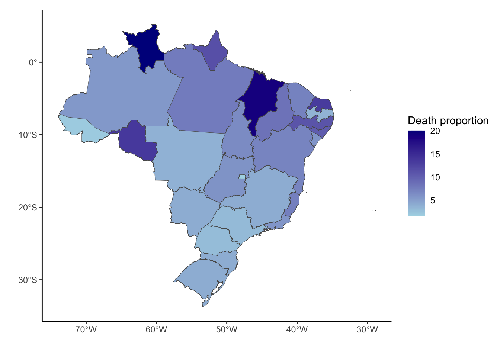
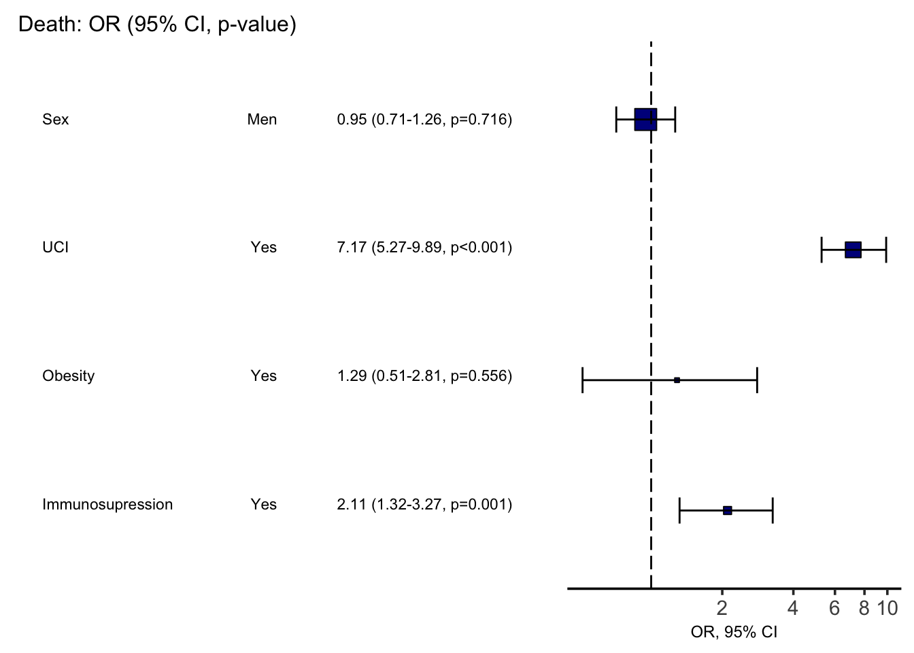

MorteCovid
Covid death among hospitalized children and young in 2022
Time distribution of Covid deaths by epi week in 2022
Pirâmide etária dos óbitos

Children and young death proportion distribution in Brazil 2022

Risk factors for Covid death among children and young in Brazil, 2022
| No | Yes | p | test | |
|---|---|---|---|---|
| n | 15397 | 738 | ||
| Sex = Men (%) | 8382 (54.4) | 423 (57.3) | 0.135 | |
| Race (%) | <0.001 | |||
| White | 6316 (50.8) | 271 (41.6) | ||
| Black | 365 ( 2.9) | 19 ( 2.9) | ||
| Asian | 84 ( 0.7) | 1 ( 0.2) | ||
| multiracial | 5565 (44.8) | 353 (54.1) | ||
| Indigenous | 100 ( 0.8) | 8 ( 1.2) | ||
| Age (%) | <0.001 | |||
| 1 yr to 4 yrs | 10328 (67.1) | 430 (58.3) | ||
| 5 yrs to 9 yrs | 2062 (13.4) | 92 (12.5) | ||
| 10 yrs to 19 yrs | 3007 (19.5) | 216 (29.3) | ||
| Scholarship (%) | 0.800 | |||
| Illiterate | 1766 (25.8) | 93 (24.9) | ||
| Basic 1st cycle | 738 (10.8) | 38 (10.2) | ||
| Basic 2nd cycle | 395 ( 5.8) | 27 ( 7.2) | ||
| High scholl | 347 ( 5.1) | 19 ( 5.1) | ||
| College | 15 ( 0.2) | 0 ( 0.0) | ||
| Not applicable | 3571 (52.3) | 196 (52.5) | ||
| Heart disease = Yes (%) | 393 (15.2) | 76 (27.7) | <0.001 | |
| Hematological disease = Yes (%) | 161 ( 6.5) | 17 ( 6.7) | 0.988 | |
| Down syndrome = Yes (%) | 170 ( 6.8) | 37 (14.1) | <0.001 | |
| Liver disease = Yes (%) | 52 ( 2.1) | 10 ( 4.1) | 0.090 | |
| Ashtma = Yes (%) | 660 (24.7) | 14 ( 5.6) | <0.001 | |
| Diabetes = Yes (%) | 154 ( 6.2) | 8 ( 3.2) | 0.070 | |
| Neurological disase = Yes (%) | 778 (29.1) | 135 (45.8) | <0.001 | |
| Lung disease = Yes (%) | 211 ( 8.5) | 30 (11.7) | 0.108 | |
| Immunosupression = Yes (%) | 366 (14.2) | 44 (17.1) | 0.245 | |
| Kidney disease = Yes (%) | 138 ( 5.6) | 19 ( 7.5) | 0.270 | |
| Obesity = Yes (%) | 82 ( 3.4) | 9 ( 3.7) | 0.951 | |
| UCI = Yes (%) | 3234 (24.0) | 426 (70.1) | <0.001 | |
| Time at UCI (mean (SD)) | 8.68 (12.16) | 10.97 (14.57) | 0.005 | |
| Ventilatory support (%) | <0.001 | |||
| Invasive | 813 ( 6.3) | 400 (65.5) | ||
| Non invasive | 5419 (42.3) | 136 (22.3) | ||
| No vent. support | 6581 (51.4) | 75 (12.3) | ||
| Covid vaccine = Yes (%) | 2663 (17.7) | 132 (18.4) | 0.679 | |
| Booster dose = Yes (%) | 263 ( 1.7) | 9 ( 1.2) | 0.389 |
Multiv. analysis for death in children - OR Plot
